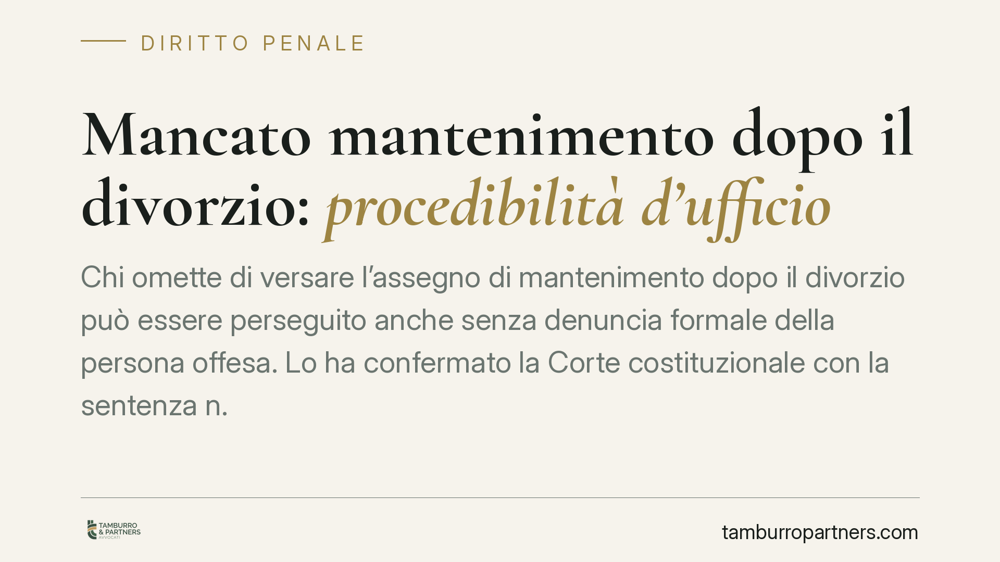

Mancato mantenimento dopo il divorzio: procedibilità d'ufficio
Chi omette di versare l'assegno di mantenimento dopo il divorzio può essere perseguito anche senza denuncia formale della persona offesa. Lo ha confermato la Corte costituzionale con la sentenza n. 96/2026, chiudendo i dubbi sollevati dal Tribunale di Varese sulla procedibilità del reato previsto dall'art. 570-bis cod. pen. Una decisione che rafforza la tutela del coniuge economicamente più debole.

Il caso e la decisione
Il Tribunale di Varese aveva sollevato una questione di legittimità costituzionale: perché il reato di violazione degli obblighi di assistenza familiare relativi all'assegno divorzile e di separazione (art. 570-bis cod. pen.) resta procedibile d'ufficio, mentre altre fattispecie di analoga gravità richiedono la querela della persona offesa?
La Corte costituzionale, con la sentenza n. 96/2026, ha dichiarato infondata la questione. Il reato rimane perseguibile d'ufficio: il pubblico ministero può avviare l'azione penale a prescindere da una denuncia o querela dell'ex coniuge.
Inquadramento normativo
L'art. 570-bis cod. pen. punisce chi si sottrae all'obbligo di corrispondere l'assegno dovuto in caso di scioglimento o cessazione degli effetti civili del matrimonio, ovvero l'assegno stabilito in sede di separazione. La norma richiama le pene previste dall'art. 570 cod. pen. (reclusione fino a un anno o multa).
La "procedibilità d'ufficio" significa che lo Stato agisce autonomamente, senza attendere l'iniziativa della vittima. È il regime opposto alla "querela", atto con cui la persona offesa chiede espressamente la punizione del colpevole entro un termine (di norma tre mesi).
La Corte ha ritenuto ragionevole questa scelta del legislatore. L'inadempimento all'obbligo di mantenimento non lede soltanto un interesse patrimoniale privato: incide sulla dignità e sulle esigenze di vita del coniuge più debole e, indirettamente, dei figli. In un contesto familiare segnato da conflitto, subordinare l'azione penale alla querela esporrebbe la persona offesa a pressioni, ritorsioni o ricatti economici da parte dell'obbligato. La procedibilità d'ufficio serve proprio a neutralizzare questo rischio.
Implicazioni pratiche
Per chi ha diritto all'assegno, la pronuncia conferma una tutela robusta: non è necessario formalizzare una querela nei termini per attivare la risposta penale. È sufficiente che la notizia dell'inadempimento giunga all'autorità giudiziaria — anche tramite una semplice segnalazione o un accertamento della polizia giudiziaria.
Per chi è tenuto al versamento, il messaggio è altrettanto chiaro. La decisione di sospendere o ridurre unilateralmente i pagamenti non può essere "neutralizzata" contando sull'inerzia dell'ex coniuge. Il procedimento può avviarsi comunque.
Attenzione, però, a una distinzione che spesso genera equivoci: il reato presuppone una condotta di sottrazione volontaria all'obbligo. La mera impossibilità economica sopravvenuta, effettiva e documentata, non integra automaticamente il reato. Chi non paga perché ha perso il lavoro o è in condizioni di comprovata difficoltà si trova in una posizione diversa da chi, pur potendo, sceglie di non adempiere.
Resta ferma, in ogni caso, la necessità di intervenire per tempo sul titolo civile: se le condizioni economiche cambiano, la via corretta è chiedere al giudice la revisione dell'assegno, non l'interruzione dei pagamenti.
Cosa fare in concreto
- Se sei creditore dell'assegno: raccogli e conserva la documentazione dei mancati versamenti (estratti conto, comunicazioni, solleciti). Serve sia in sede penale sia per l'eventuale azione esecutiva civile.
- Segnala l'inadempimento: puoi rivolgerti alle autorità anche senza una querela formale; una denuncia circostanziata agevola comunque l'accertamento.
- Non trascurare la via civile: valuta parallelamente il pignoramento presso terzi (ad esempio sullo stipendio) per recuperare le somme dovute.
- Se sei debitore in difficoltà: non sospendere i pagamenti di tua iniziativa. Chiedi tempestivamente al giudice la revisione dell'assegno, documentando il mutamento delle condizioni economiche.
- Fatti assistere per tempo: la valutazione tra "volontaria sottrazione" e "impossibilità incolpevole" richiede un'analisi tecnica del caso specifico.
Conclusione
La sentenza n. 96/2026 consolida un principio di tutela: l'obbligo di mantenimento riguarda interessi che vanno oltre la sfera individuale del creditore. La risposta dell'ordinamento non dipende dalla volontà — talvolta condizionata — della persona offesa. Un chiarimento utile per orientare le scelte, in entrambe le posizioni.
---
*Contributo informativo a cura di Tamburro & Partners - Avv. Giuseppe Tamburro. Non costituisce parere legale.*
Ogni condominio ha una storia a sé.
Se gestisci un'amministrazione e vuoi un confronto su una specifica questione condominiale, scrivi allo studio. Ti rispondiamo entro un giorno lavorativo.